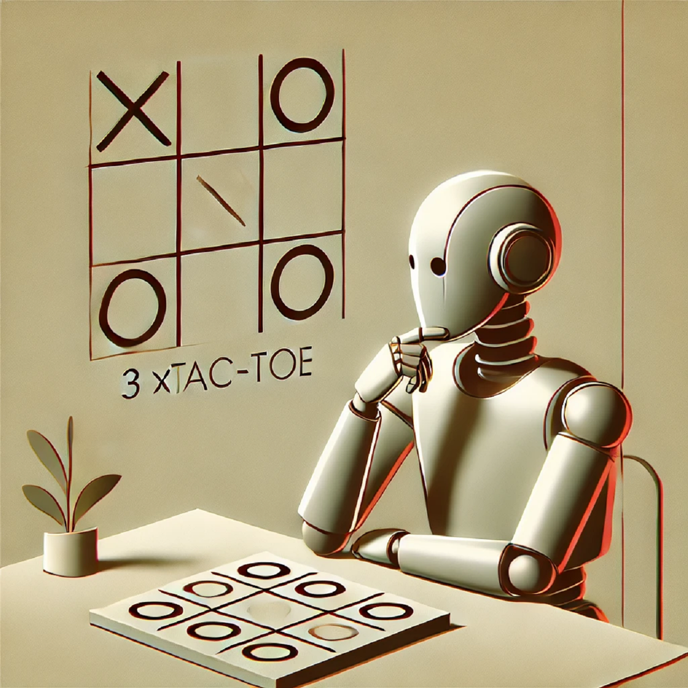

CS50AI by Havard University
Recursive-Depth-First-Graph-Search as part of Harvardx's CS50AI :

This project is characterized by the straightforwardness and simplicity with which it was implemented in Python. It solves Tic-Tac-Toe,
basically any finite 2-player game, using a recursive depth-first graph search. The game Tic-Tac-Toe was adopted from the pygames implementation.
Since the game is finite,
the AI can calculate every terminal situation and select the most advantageous outcome. By recursively climbing up the graph, which can be thought
of as a classic tree, the AI determines the optimal move given any, and in particular the current state of the game-board. As a result, the AI can never lose,
but you as a human adversary could lose and always will should you not play optimally.